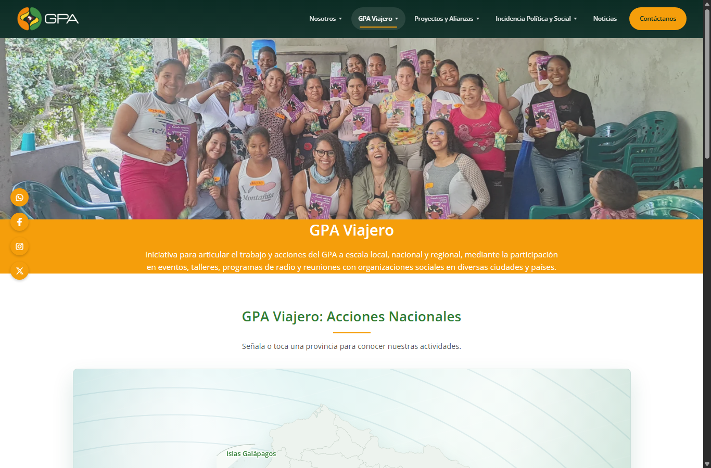
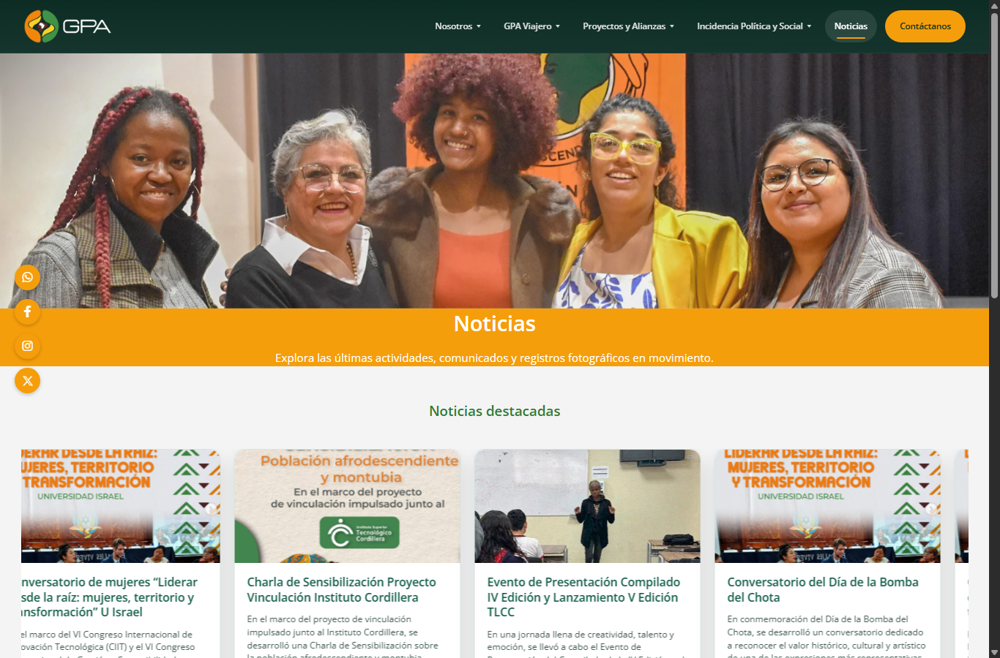
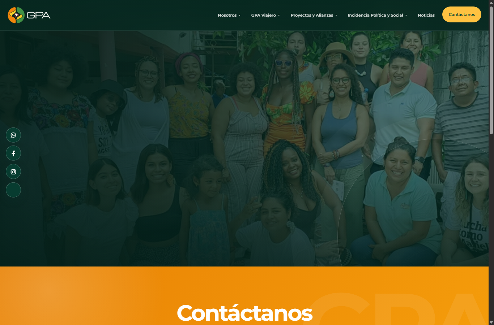

Consulta institucional
Permite conocer historia, misión, visión, objetivos, valores, GPAlito y autoridades del GPA.

Guía para navegar, consultar información, usar mapas interactivos, revisar noticias y contactar al Grupo de Pensamiento Afrodescendiente.
Este manual explica cómo utilizar el sitio web GPA Ecuador. El documento describe las opciones del menú, el contenido de cada página, los botones principales, los mapas interactivos, el formulario de contacto y los accesos a redes sociales.
Permite conocer historia, misión, visión, objetivos, valores, GPAlito y autoridades del GPA.
Muestra iniciativas, alianzas, convenios, organizaciones aliadas y acciones de incidencia.
Ofrece enlaces a redes sociales, WhatsApp, noticias externas y formulario de contacto.
El formulario de contacto muestra un mensaje de confirmación local. Para enviar correos reales se debe conectar el sitio a un backend o servicio de correo.
La página inicial presenta la información institucional del GPA: historia, misión, visión, objetivos, valores, la mascota GPAlito y el directorio de autoridades.
Esta sección muestra la presencia del GPA en Ecuador y otros países. Incluye mapas interactivos y tarjetas de destinos.

GPA Viajero permite explorar acciones nacionales e internacionales mediante mapas y tarjetas de ubicación.
Esta página reúne programas, concursos, publicaciones, acciones de formación, convenios institucionales y organizaciones aliadas.
Proyectos y Alianzas organiza el contenido en bloques con imágenes, tarjetas y enlaces internos.
OratoriaTe lo cuento en un cuentoTransformando NarrativasEvocando RaícesFormación de LíderesConvenios
Presenta los espacios de diálogo, acciones de incidencia local, nacional y regional, y el trabajo del GPA en participación ciudadana y políticas públicas.
Sección de Incidencia Política y Social con bloques informativos e imágenes de apoyo.
Noticias muestra carruseles automáticos con actividades, comunicados y enlaces externos para leer más en Instagram.

Página de noticias con carruseles de tarjetas y botón Leer más.
La página de contacto contiene un formulario, correo, número telefónico y un botón para ver créditos del desarrollo web.

Formulario de contacto, datos institucionales y botón de créditos.
Al pasar el cursor sobre una opción con flecha, se muestran enlaces directos a subsecciones. En celular, el menú se abre desde el icono de tres líneas.
En GPA Viajero, al señalar, tocar o enfocar una provincia o país, aparece un panel con actividades. Use Esc o toque fuera del mapa para cerrar.
Si una página muestra imágenes de galería, pulse una imagen para abrirla en vista ampliada. Cierre con el botón X, Esc o tocando fuera.
Las imágenes principales cambian automáticamente. En Noticias, las tarjetas se desplazan para mostrar más contenido.
Al desplazarse por la página, una barra superior indica el avance de lectura.
En Contáctanos, pulse el botón Créditos para mostrar u ocultar la información del equipo de desarrollo.
El sitio ofrece una barra lateral con accesos rápidos a redes sociales. Estos enlaces se abren fuera del sitio web.
| Canal | Acción del usuario |
|---|---|
| Pulse el icono de WhatsApp para abrir una conversación con GPA. | |
| Pulse el icono de Facebook para visitar la página oficial. | |
| Pulse el icono de Instagram o los botones Leer más de Noticias para abrir publicaciones. | |
| X | Pulse el icono de X para visitar el perfil de GPA. |
| Formulario | Escriba nombre, correo y mensaje. Al enviar, el sitio muestra que el formulario está listo para conectarse a un servicio de correo. |
| Situación | Solución recomendada |
|---|---|
| No abre una red social | Revise la conexión a internet o permita ventanas/pestañas emergentes del navegador. |
| No aparece el panel del mapa | Toque o haga clic directamente sobre una provincia o país destacado. En escritorio también puede pasar el cursor. |
| El formulario no envía correo | El formulario necesita conexión a un backend o servicio de correo. Por ahora muestra una confirmación local. |
| El menú no se ve completo en celular | Use el icono de tres líneas, desplácese por el menú y seleccione una opción. También puede girar el celular si necesita más espacio. |
| Las imágenes tardan en cargar | Espere unos segundos o actualice la página. Las imágenes del sitio son parte central del contenido visual. |